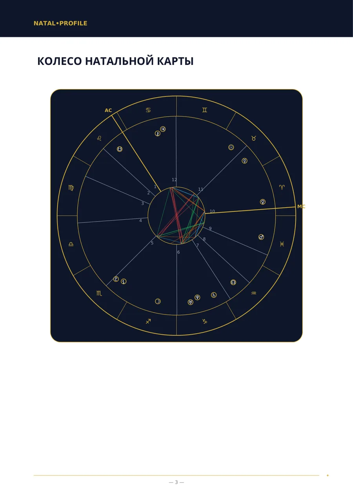
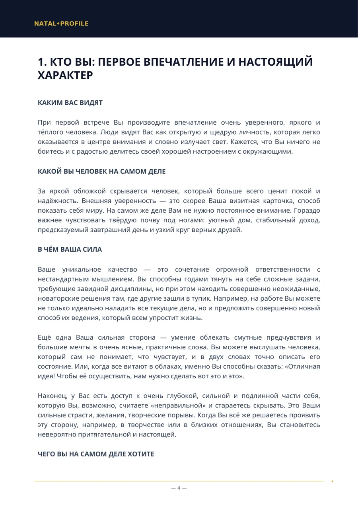
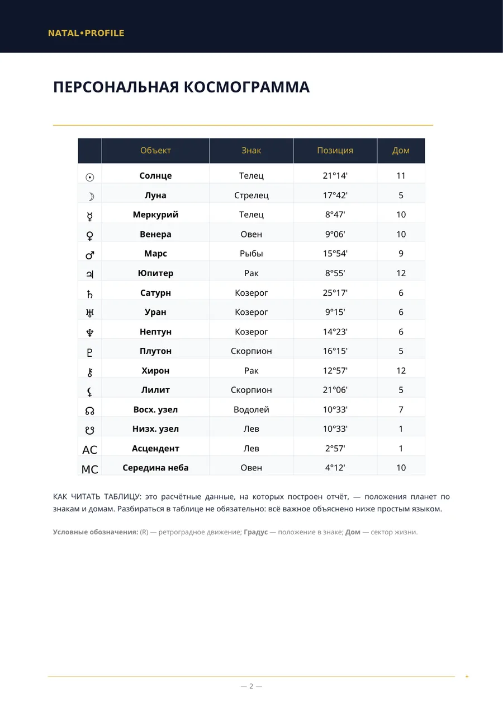
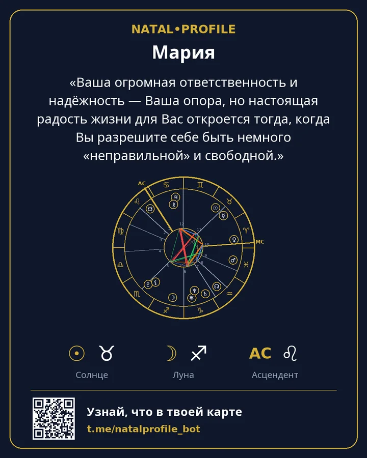

Your birth chart, explained in plain language
Enter your date, time and city of birth and get a PDF in a few minutes: what your character is like, where your strength lies, what gets in the way and where to start. No jargon and no generic zodiac-sign talk.
- Calculated with the Swiss Ephemeris
- 15 languages
- No subscription
Two quick calculations
They run in your browser. Nothing is sent or stored.
Sun sign and element
Read the whole chart →The Sun sign is one of dozens of points in a chart. A report takes all planets, houses and the links between them into account.
Life Path number
Get the numerology reading →Calculated the same way as in the bot's report: the digits of the date are added up to a single digit. Name numbers are calculated in the bot.
What a report looks like
Real pages of the Natal Chart report (shown here in Russian). This is a sample: the birth data is fictional.




«Your great sense of responsibility and reliability is your foundation, but the real joy of life opens up for you when you allow yourself to be a little “wrong” and free.»
What you can order
The chapter lists on the report pages are the ones you get in the PDF. Prices are in Telegram Stars.
Natal Chart (Full Analysis)
A full reading of your character from the date, time and place of birth.
Natal Chart (Basic Analysis)
A reading of your character when the birth time is unknown.
Compatibility Analysis (Full Review)
Two people: what drew you together, where you disagree and what you give each other.
Compatibility Analysis (Basic Review)
Compatibility of characters when the birth time is unknown.
Career and Financial Analysis
What you are good at in work, which occupations suit you and how you handle money.
Child's Chart — A guide to your child
What your child needs to feel calm and where to support them.
Yearly Forecast (Solar Return)
The themes of your year from birthday to birthday, with dated periods.
Daily Horoscope
A forecast for today based on the exact timing of the Moon's aspects.
Numerology by Name and Birth Date
The numbers of your name and birth date in the Pythagorean system.
Vedic Chart (Jyotish)
A Vedic chart: lagna, grahas, nakshatra and dasha periods.
How it works
From the first message to the finished file in a few minutes.
Open the bot
In Telegram, with no sign-up and no passwords.
Enter your data
Name, date, time and city of birth. The city is picked from a list.
Get the PDF
Usually within 5 minutes. The file arrives in the chat.
Keep the card
An image with your chart and the key phrase from the report.
Payment
Reports are paid for with Telegram Stars right in the chat with the bot. There is no subscription — you pay for a report once.
The first chapter of the natal reading with your chart and a daily horoscope — once each, at no charge.
You pay for a report and get a link. Your friend opens it, enters their own data and receives the reading.
The bot has a “Can't pay?” hint, and support answers in Telegram.
Your data
The date, time and place of birth are needed only to calculate the chart and write the report.
Once the PDF is sent, the name, date, time and place of birth are erased.
The PDF stays on the server for 24 hours and is then deleted. You keep it in the chat.
The calculators run in your browser. The site has no forms, no sign-up and no trackers.
Frequently asked questions
I don't know my time of birth. What should I do?
Choose a report “without birth time”. It leaves out houses and the ascendant, but character, feelings, thinking and relationships are described without them.
How is this different from a zodiac-sign horoscope?
A sign horoscope uses only the position of the Sun. A report calculates all planets, houses and the links between them for your date, time and place of birth.
Who writes the text of the report?
Planet positions are calculated by software using the Swiss Ephemeris. A language model then writes the text from those calculations under fixed rules.
Which languages are reports available in?
Fifteen: English, Russian, Spanish, Hindi, Portuguese, Vietnamese, Turkish, Indonesian, Uzbek, Kazakh, French, German, Italian, Arabic and Persian.
Can I get a refund?
A report is created for you personally, so payment is not refunded after the PDF is delivered. If a report was not generated through our fault, a full refund is issued.
Start with the free chapter
We calculate your chart and send the first chapter of the real reading. If you like it, get the full one.